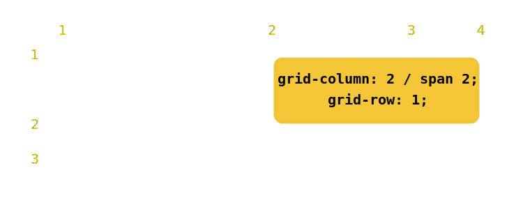
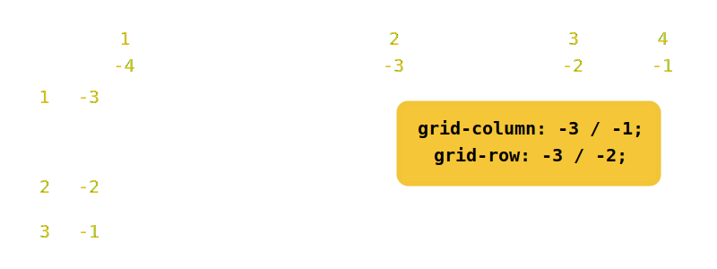
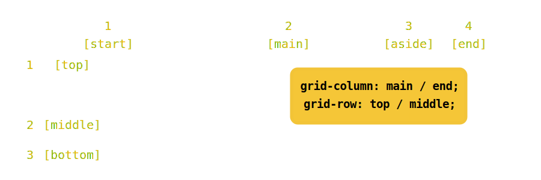
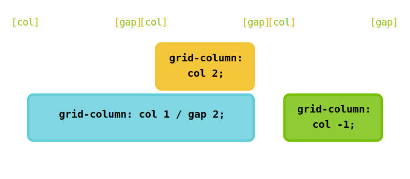
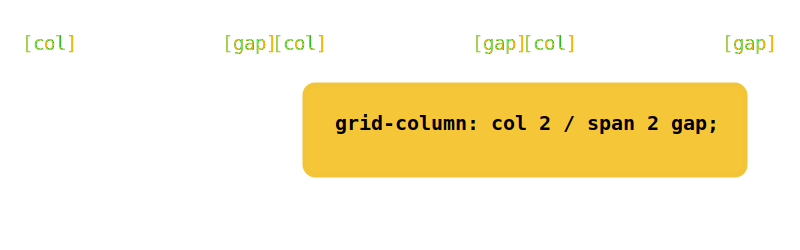
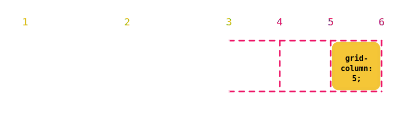

Touch the future
&
play with it
Are you a pioneer?
You'll enjoy ;)
1 Grid layout
Grid Terminology
The specification is really flexible regarding how to place items on the grid.
Choose your favourite way
Example in use
Grid lines
The grid lines are the ones dividing horizontally and vertically a grid. And they’re actually numbered, starting at 1.

.grid{
display: grid;
grid-template-columns: 300px 200px 100px;
grid-template-rows: 100px 50px;
}
Grid placement properties
- grid-column:
- Shorthand for grid-column-start and grid-column-end properties.
- grid-row:
- Shorthand for grid-row-start and grid-row-end properties.
- grid-area:
- Shorthand to set the 4 placement properties in just one declaration.
The long way:
.item{
grid-column-start: 2;
grid-column-end: 4;
grid-row-start: 1;
grid-row-end 2;
}
Easier with shorthands:
.item{
grid-column: 2 / 4;
grid-row: 1 / 2;
}
Cell spanning
The same position using span.

.item{
grid-column: 2 / span 2;
grid-row: 1;
}
Negative line numbers
Negative numbers allow you to reference the lines starting from the end of the grid. It's like a reverse.
Useful if you want to be sure that the item is in the last column, independently of the number of tracks, you’ll just need to set: grid-column-end: -1;
Named grid lines
You can name the grid lines, so you don’t need to remember the specific number to reference to them.

.item{
display: grid;
grid-template-columns: [start] 300px [main] 200px [aside] 100px [end];
grid-template-rows: [top] 100px [middle] 50px [bottom];
}
One line can have several names, you just need to set them in the definition:
.grid{
grid-template-rows: [top start] 100px [middle center] 50px [bottom end];
}
The names of the lines can be repeated. To reference them you’ve to use a number that can be again positive or negative.

.grid{
display: grid;
grid-template-columns: [col] 200px [gap] 50px
[col] 200px [gap] 50px [col] 200px [gap];
}
.item1{ grid-column: col 2;}
.item2{ grid-column: col 1 / gap 2;}
.item3{ grid-column: col -1;}
And of course, you can span to a named grid line.

.item{
grid-column: col 2 / span 2 gap;
}
Grid areas
You can define grid areas and place items directly on them. You have to use the grid-template-areas property to put names to the different areas in your grid. And you could use the grid-area shorthand directly to place the items.
.grid{
display: grid;
grid-template-columns: 100px 100px 100px 100px 100px;
grid-template-rows: 100px 100px 100px 100px;
grid-template-areas:
'title title title title aside'
'nav main main main aside'
'nav main main main aside'
'footer footer footer footer footer';
}
.item1{grid-area: title;}
.item2{grid-area: nav;}
.item3{grid-area: main;}
.item4{grid-area: aside;}
.item5{grid-area: footer;}
Implicit names
Grid areas create implicit names for the grid lines surrounding them. These implicit names use the “-start” and “-end” suffixes.
E.g. the “title” area creates 4 implicit names for the lines (2 in each axis):
- Left line: “title-start”
- Right line: “title-end”
- Top line: “title-start”
- Bottom line: “title-end”
And you can reference those lines when placing an item, instead of using the whole area.
Implicit grid
It's possible to place items outside of the explicit grid, creating implicit tracks automatically. The size of these tracks is controlled by grid-auto-columns and grid-auto-rows properties.

.grid{
display: grid;
grid-template-columns: 200px 200px;
grid-auto-columns: 100px;
}
.item{
grid-column:5;
}
.grid{
display: grid;
grid-template-columns: 200px 200px;
grid-auto-columns: 100px;
}
.item{
grid-column:2 / span 3;
}
.item{
grid-column:-5;
}
the fr Unit
The new kid on the block
The fr unit can be used for grid-rows and grid-columns values. It stands for "fraction of available space". Think of it as percentages for available space when you've taken off fixed-sized and content-based columns/rows. As the spec says:
The distribution of fractional space occurs after all 'length' or content-based row and column sizes have reached their maximum.
The repeat() function
It allows you to define a pattern repeated X times.
Let's say you want to do 12 equal-width columns spaced from each other by a 1% margin:
grid-template-column:1fr repeat(11, 1% 1fr);
It is the same as:
grid-template-column:1fr 1% 1fr 1% 1fr 1% 1fr 1% 1fr 1% 1fr 1% 1fr 1% 1fr 1% 1fr 1% 1fr 1% 1fr 1% 1fr;
Can Iuse?
Enable CSS Grid Layout

Chrome
Enable the flag called Enable experimental Web Platform features going to:
chrome://flags/#enable-experimental-web-platform-features

Firefox
Enable the flag called layout.css.grid.enabled going to:
about:config


Opera
Enable the flag called Enable experimental Web Platform features going to:
opera://flags/#enable-experimental-web-platform-features

Check the CSS Grid Layout polyfill by François Remy.
Doc.
2 Custom properties
Syntax
:root{
--color:#f2b806;
}
.foo{
color:var(--color);
}
Cascade on custom properties
If a custom property is declared multiple times, the standard cascade rules help resolve it
:root { --color: yellow; }
div { --color: pink; }
#alert { --color: blue; }
* { color: var(--color); }
I inherited blue from the root element!
I got green set directly on me!
While I got red set directly on me!
I’m red too, because of inheritance!
Can I use?
But we can use the sintaxis today
With
PostCSS
CSS extensions
W3C Editor's Draft
Custom selectors
W3C Editor's Draft
Sexy
@custom-selector :--heading h1, h2, h3, h4, h5, h6;
:--heading { /* styles for all headings */ }
:--heading + p { /* more styles */ }
/* etc */
But this is the future
Really?
postcss-custom-selectors
@apply rule
:root {
--toolbar-theme: {
background-color: hsl(120, 70%, 95%);
border-radius: 4px;
border: 1px solid var(--theme-color late);
};
--toolbar-title-theme: {
color: green;
};
}
.toolbar {
@apply --toolbar-theme;
}
.toolbar > .title {
@apply --toolbar-title-theme;
}3 PostCSS
Is Sass dead?
A tool for transforming CSS with JavaScript
Based on plugins
Build you own environment
Currently, PostCSS has more than 200 plugins
Great Plugins


From Sass to PostCSS
Try it
It's possible